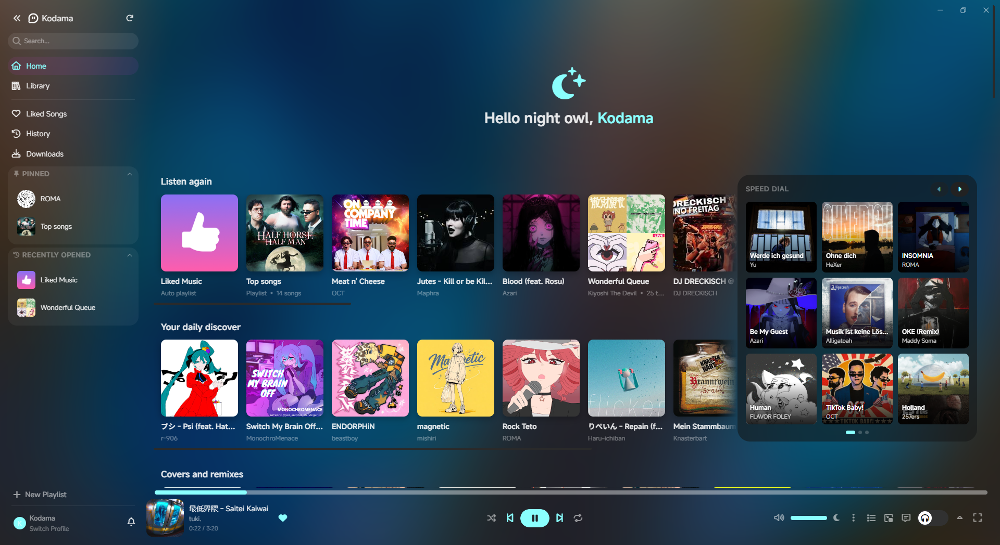
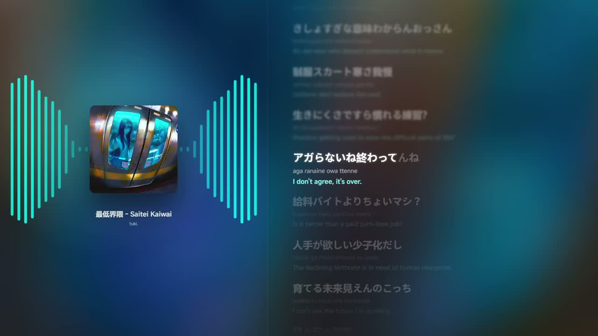

A desktop player for YouTube Music
Synced lyrics, personalization, and more.

A desktop player for YouTube Music
Synced lyrics, personalization, and more.

A full-screen now-playing view with a real-time audio visualizer and word-synced lyrics — romaji and translations included.

Line, Word- and syllable-level synchronized lyrics, with translations and romaji for Japanese songs
A reactive, fully customizable visualizer with savable presets.
A dedicated widget to put your now-playing track on stream.
Control playback from your phone over your local network.
Dynamic accent colors drawn from the cover art, themes, and swappable app icons.
Offline downloads, Discord Rich Presence, and Last.fm scrobbling.